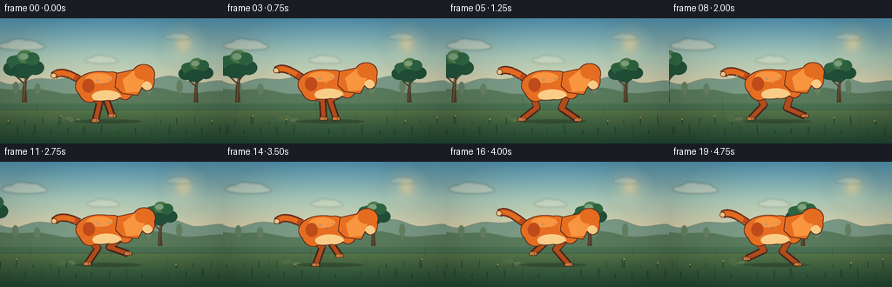
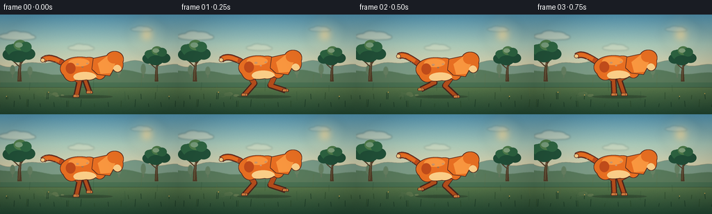
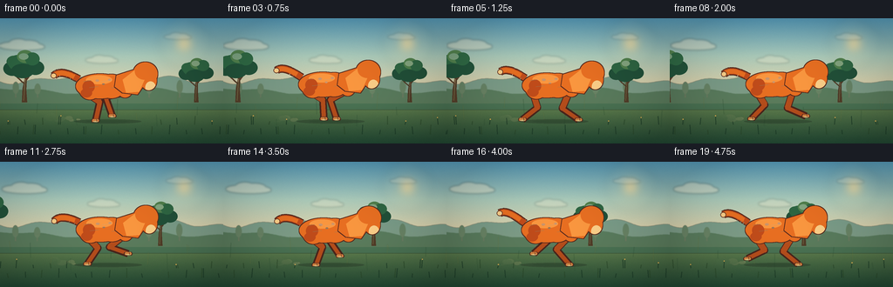
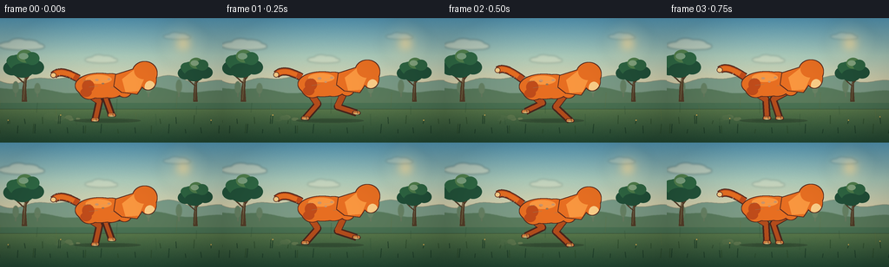
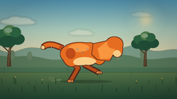
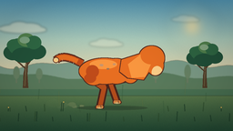
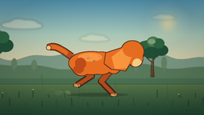

CODING AGENTS AS PIXEL WORLD MODELS
traex/DeepSeek-V4.1-Flash · instance_preservation_0000
点击播放 · 原生 RGB 像素
逐轮保存的候选
回放视频、检查图与代码变化。
每份候选均可单独播放。实际图片检查记录在下方工具轨迹中。
候选 01播放与检查图
点击播放 · 原生 RGB 像素

展开代码变化
--- 上一保存版本
+++ 本次保存版本
@@ -0,0 +1,589 @@
+from __future__ import annotations
+
+import math
+from pathlib import Path
+
+import numpy as np
+from PIL import Image, ImageDraw, ImageFilter
+
+import artifact_io
+
+
+ROOT = Path(__file__).resolve().parent
+WIDTH = 256
+HEIGHT = 144
+FRAMES = 20
+FPS = 4.0
+SS = 4
+FW = WIDTH * SS
+FH = HEIGHT * SS
+
+SKY_TOP = np.array([87, 158, 190], dtype=float)
+SKY_MID = np.array([171, 205, 190], dtype=float)
+SKY_HORIZON = np.array([247, 214, 163], dtype=float)
+GROUND_TOP = np.array([105, 135, 83], dtype=float)
+GROUND_BOTTOM = np.array([34, 73, 52], dtype=float)
+
+
+def mix(a, b, t):
+ return tuple(round(a[i] + (b[i] - a[i]) * t) for i in range(3))
+
+
+def bezier(points, samples=32):
+ pts = np.asarray(points, dtype=float)
+ n = len(pts) - 1
+ out = []
+ for t in np.linspace(0.0, 1.0, samples):
+ p = pts.copy()
+ for level in range(1, n + 1):
+ p[: n + 1 - level] = (
+ (1.0 - t) * p[: n + 1 - level] + t * p[1 : n + 2 - level]
+ )
+ out.append(tuple(p[0]))
+ return out
+
+
+def S(value):
+ if isinstance(value, (tuple, list, np.ndarray)):
+ return tuple(float(v) * SS for v in value)
+ return float(value) * SS
+
+
+def bbox(box):
+ return tuple(float(v) * SS for v in box)
+
+
+def make_background(frame_index):
+ y = np.arange(FH, dtype=float)[:, None] / FH
+ image = np.zeros((FH, FW, 3), dtype=float)
+
+ sky_end = 0.68
+ for row in range(FH):
+ u = row / FH
+ if u < 0.30:
+ t = u / 0.30
+ color = SKY_TOP + (SKY_MID - SKY_TOP) * t
+ elif u < sky_end:
+ t = (u - 0.30) / (sky_end - 0.30)
+ color = SKY_MID + (SKY_HORIZON - SKY_MID) * t
+ else:
+ t = (u - sky_end) / (1.0 - sky_end)
+ color = GROUND_TOP + (GROUND_BOTTOM - GROUND_TOP) * (t**0.78)
+ image[row, :, :] = color
+
+ # Very soft atmospheric grain keeps the broad gradients from banding.
+ rng = np.random.default_rng(118)
+ grain = rng.normal(0.0, 1.55, (FH, FW, 1))
+ image += grain
+ return Image.fromarray(np.clip(image, 0, 255).astype(np.uint8), "RGB")
+
+
+def add_sun(image):
+ glow = Image.new("RGBA", (FW, FH), (0, 0, 0, 0))
+ d = ImageDraw.Draw(glow)
+ cx, cy = S((211, 29))
+ for radius, alpha in ((29, 12), (22, 17), (15, 26), (10, 46), (7, 230)):
+ r = S(radius)
+ d.ellipse((cx - r, cy - r, cx + r, cy + r), fill=(255, 229, 164, alpha))
+ glow = glow.filter(ImageFilter.GaussianBlur(S(5)))
+ return Image.alpha_composite(image.convert("RGBA"), glow).convert("RGB")
+
+
+def add_clouds(image, t):
+ cloud = Image.new("RGBA", (FW, FH), (0, 0, 0, 0))
+ d = ImageDraw.Draw(cloud)
+ clouds = [
+ (54, 31, 1.00, 0.85),
+ (145, 47, 0.72, 0.58),
+ (232, 21, 0.60, 0.45),
+ ]
+ for base_x, base_y, scale, alpha in clouds:
+ x = (base_x + t * 1.1 * scale) % (WIDTH + 54) - 27
+ y = base_y + math.sin(t * 0.35 + base_x) * 0.7
+ color = (255, 243, 213, round(110 * alpha))
+ for ox, oy, rx, ry in (
+ (-15, 1, 13, 4.2),
+ (-6, -2, 11, 5.0),
+ (5, -1, 13, 4.6),
+ (14, 2, 10, 3.6),
+ (0, 3, 24, 3.2),
+ ):
+ d.ellipse(
+ bbox(
+ (
+ x + ox * scale - rx * scale,
+ y + oy * scale - ry * scale,
+ x + ox * scale + rx * scale,
+ y + oy * scale + ry * scale,
+ )
+ ),
+ fill=color,
+ )
+ cloud = cloud.filter(ImageFilter.GaussianBlur(S(1.2)))
+ return Image.alpha_composite(image.convert("RGBA"), cloud).convert("RGB")
+
+
+def add_distant_landscape(image, t):
+ overlay = Image.new("RGBA", (FW, FH), (0, 0, 0, 0))
+ d = ImageDraw.Draw(overlay)
+
+ # Hazy blue-green ridge.
+ far = []
+ for x in range(-8, WIDTH + 12, 2):
+ ridge = 71 + 3.0 * math.sin(x * 0.055 + 0.7) + 2.0 * math.sin(x * 0.12)
+ far.append((x, ridge))
+ far += [(WIDTH + 12, 98), (-8, 98)]
+ d.polygon([S(p) for p in far], fill=(99, 143, 128, 205))
+
+ # A slightly darker, closer hill line.
+ mid = []
+ for x in range(-8, WIDTH + 12, 2):
+ ridge = (
+ 83
+ + 2.5 * math.sin(x * 0.041 - 1.8)
+ + 1.5 * math.sin(x * 0.095 + 0.2)
+ )
+ mid.append((x, ridge))
+ mid += [(WIDTH + 12, 105), (-8, 105)]
+ d.polygon([S(p) for p in mid], fill=(70, 112, 84, 225))
+
+ # Tiny distant trunks help the meadow feel deep without competing with the dog.
+ parallax = 0.10 * t
+ for world_x, height, width in ((18, 9, 1.2), (43, 7, 1.0), (171, 8, 1.1), (206, 11, 1.3)):
+ x = ((world_x - parallax + 18) % (WIDTH + 36)) - 18
+ d.rectangle(bbox((x - width / 2, 88 - height, x + width / 2, 91)), fill=(55, 89, 70, 180))
+ d.ellipse(bbox((x - 3.5, 82 - height, x + 3.5, 89 - height * 0.25)), fill=(58, 102, 76, 185))
+
+ overlay = overlay.filter(ImageFilter.GaussianBlur(S(0.35)))
+ return Image.alpha_composite(image.convert("RGBA"), overlay).convert("RGB")
+
+
+def draw_tree(image, x, ground_y, scale, t, shade=1.0):
+ overlay = Image.new("RGBA", (FW, FH), (0, 0, 0, 0))
+ d = ImageDraw.Draw(overlay)
+ trunk_dark = tuple(round(c * shade) for c in (91, 68, 45))
+ trunk_light = tuple(round(c * shade) for c in (131, 92, 54))
+ leaf_dark = tuple(round(c * shade) for c in (38, 91, 65))
+ leaf_mid = tuple(round(c * shade) for c in (52, 116, 76))
+ leaf_light = tuple(round(c * shade) for c in (91, 145, 88))
+
+ lean = 2.0 * math.sin(t * 0.55 + x * 0.04)
+ trunk = [
+ (x - 3.0 * scale, ground_y),
+ (x - 2.3 * scale, ground_y - 17 * scale),
+ (x - 1.4 * scale + lean, ground_y - 31 * scale),
+ (x + 1.2 * scale + lean, ground_y - 31 * scale),
+ (x + 2.3 * scale, ground_y - 16 * scale),
+ (x + 3.3 * scale, ground_y),
+ ]
+ d.polygon([S(p) for p in trunk], fill=(*trunk_dark, 255))
+ d.line(
+ [S((x - 0.7 * scale, ground_y - 2 * scale)), S((x + lean * 0.45, ground_y - 29 * scale))],
+ fill=(*trunk_light, 160),
+ width=max(1, round(S(1.1 * scale))),
+ )
+ branches = [
+ [(x, ground_y - 23 * scale), (x - 9 * scale, ground_y - 31 * scale), (x - 14 * scale, ground_y - 36 * scale)],
+ [(x + lean, ground_y - 27 * scale), (x + 8 * scale, ground_y - 36 * scale), (x + 14 * scale, ground_y - 40 * scale)],
+ [(x + 0.3 * scale, ground_y - 30 * scale), (x + 1.0 * scale, ground_y - 41 * scale), (x + 3 * scale, ground_y - 48 * scale)],
+ ]
+ for branch in branches:
+ pts = bezier(branch, 18)
+ d.line([S(p) for p in pts], fill=(*trunk_dark, 255), width=max(2, round(S(2.0 * scale))), joint="curve")
+
+ canopy = [
+ (-15, -42, 11, 9, leaf_dark),
+ (-7, -49, 13, 10, leaf_mid),
+ (5, -50, 12, 10, leaf_mid),
+ (14, -43, 11, 9, leaf_dark),
+ (-13, -51, 9, 7, leaf_mid),
+ (1, -57, 10, 8, leaf_light),
+ (10, -54, 9, 8, leaf_mid),
+ (-2, -39, 14, 9, leaf_dark),
+ ]
+ for ox, oy, rx, ry, color in canopy:
+ sway = math.sin(t * 0.8 + x * 0.05 + oy * 0.08) * 0.35
+ d.ellipse(
+ bbox(
+ (
+ x + (ox + sway) * scale - rx * scale,
+ ground_y + oy * scale - ry * scale,
+ x + (ox + sway) * scale + rx * scale,
+ ground_y + oy * scale + ry * scale,
+ )
+ ),
+ fill=(*color, 255),
+ )
+ d.ellipse(
+ bbox(
+ (
+ x - 7 * scale,
+ ground_y - 61 * scale,
+ x + 5 * scale,
+ ground_y - 53 * scale,
+ )
+ ),
+ fill=(*leaf_light, 130),
+ )
+ return Image.alpha_composite(image.convert("RGBA"), overlay).convert("RGB")
+
+
+def add_meadow_details(image, t):
+ overlay = Image.new("RGBA", (FW, FH), (0, 0, 0, 0))
+ d = ImageDraw.Draw(overlay)
+
+ # Sunlit grass bands flow with the same ground speed as the runner.
+ scroll = 36.0 * t
+ for index in range(13):
+ world_x = index * 25 + (index * 17) % 19
+ x = ((world_x - scroll + 30) % (WIDTH + 60)) - 30
+ y = 102 + (index * 7) % 27
+ length = 6 + (index * 5) % 14
+ bend = math.sin(index * 1.7 + t * 1.4) * 1.2
+ color = (57, 102, 66, 95) if index % 2 else (129, 143, 77, 70)
+ d.line(
+ [S((x, y)), S((x + bend, y - length))],
+ fill=color,
+ width=max(1, round(S(0.65))),
+ )
+
+ # Foreground blades frame the action without covering the dog.
+ for index in range(36):
+ world_x = (index * 29 + 11) % 310
+ x = ((world_x - scroll * 1.28 + 32) % (WIDTH + 64)) - 32
+ y = 122 + (index * 11) % 22
+ if 82 < x < 181 and y < 130:
+ continue
+ h = 3.5 + (index * 7) % 8
+ sway = math.sin(t * 2.0 + index * 0.8) * 0.9
+ color = (30, 70, 46, 230) if index % 3 else (52, 92, 52, 225)
+ d.line(
+ [S((x, y)), S((x + sway, y - h))],
+ fill=color,
+ width=max(1, round(S(0.85))),
+ )
+ if index % 6 == 2:
+ d.ellipse(
+ bbox((x + sway - 0.8, y - h - 1.2, x + sway + 0.8, y - h + 0.4)),
+ fill=(240, 195, 92, 210),
+ )
+
+ overlay = overlay.filter(ImageFilter.GaussianBlur(S(0.18)))
+ return Image.alpha_composite(image.convert("RGBA"), overlay).convert("RGB")
+
+
+def foot_position(q, base_x, stride=29.0, lift=12.5, ground=39.0):
+ q %= 1.0
+ stance = 0.58
+ if q < stance:
+ u = q / stance
+ x = base_x + stride * (0.5 - u)
+ y = ground
+ else:
+ u = (q - stance) / (1.0 - stance)
+ smooth = u * u * (3.0 - 2.0 * u)
+ x = base_x + stride * (-0.5 + smooth)
+ y = ground - lift * math.sin(math.pi * u)
+ return x, y
+
+
+def solve_leg(hip, foot, upper, lower, bend_sign):
+ hx, hy = hip
+ fx, fy = foot
+ dx, dy = fx - hx, fy - hy
+ distance = math.hypot(dx, dy)
+ dmax = upper + lower - 0.15
+ dmin = abs(upper - lower) + 0.2
+ d = max(dmin, min(dmax, distance))
+ if distance > 1e-5:
+ fx = hx + dx / distance * d
+ fy = hy + dy / distance * d
+ theta = math.atan2(fy - hy, fx - hx)
+ cosine = (upper * upper + d * d - lower * lower) / (2.0 * upper * d)
+ cosine = max(-1.0, min(1.0, cosine))
+ alpha = math.acos(cosine)
+ knee_angle = theta + bend_sign * alpha
+ knee = (hx + upper * math.cos(knee_angle), hy + upper * math.sin(knee_angle))
+ return knee, (fx, fy)
+
+
+def draw_limb(d, hip, knee, foot, color, outline, width_upper, width_lower):
+ points = [S(hip), S(knee), S(foot)]
+ d.line(points, fill=outline, width=round(S(width_upper + 1.6)), joint="curve")
+ d.line([S(knee), S(foot)], fill=outline, width=round(S(width_lower + 1.6)), joint="curve")
+ d.line([S(hip), S(knee)], fill=color, width=round(S(width_upper)), joint="curve")
+ d.line([S(knee), S(foot)], fill=color, width=round(S(width_lower)), joint="curve")
+ for point, width in ((hip, width_upper), (knee, width_lower + 0.2), (foot, width_lower * 0.72)):
+ px, py = point
+ r = width / 2.0
+ d.ellipse(bbox((px - r, py - r, px + r, py + r)), fill=color)
+
+
+def draw_paw(d, foot, facing, color, outline, phase):
+ x, y = foot
+ # A compact paw with a small toe split reads better than a pointed foot.
+ pad = [(x - 3.7, y - 2.1), (x + 3.6, y - 2.2), (x + 5.2, y + 0.2), (x + 3.9, y + 2.2), (x - 4.3, y + 2.0), (x - 5.0, y - 0.2)]
+ d.polygon([S(p) for p in pad], fill=outline)
+ inner = [(x - 3.2, y - 1.7), (x + 3.1, y - 1.8), (x + 4.2, y + 0.1), (x + 3.2, y + 1.5), (x - 3.7, y + 1.4), (x - 4.0, y - 0.1)]
+ d.polygon([S(p) for p in inner], fill=color)
+ toe_x = x + (1.2 if facing else -1.2)
+ d.line([S((toe_x, y - 1.4)), S((toe_x + 0.2, y + 1.0))], fill=outline, width=max(1, round(S(0.55))))
+
+
+def add_dust_and_motion(image, dog_x, dog_y, t, q):
+ overlay = Image.new("RGBA", (FW, FH), (0, 0, 0, 0))
+ d = ImageDraw.Draw(overlay)
+
+ # Low dust blooms trail the back feet and dissipate toward the left.
+ for index in range(7):
+ phase = (t * 2.15 + index * 0.173) % 1.0
+ x = dog_x - 33 - phase * 33 - (index % 2) * 3
+ y = 116.5 - 2.2 * phase + math.sin(index * 2.1) * 1.1
+ radius = 2.0 + phase * (5.2 + index % 3)
+ alpha = round(58 * (1.0 - phase) ** 1.4)
+ d.ellipse(
+ bbox((x - radius, y - radius * 0.58, x + radius, y + radius * 0.58)),
+ fill=(238, 211, 154, alpha),
+ )
+
+ # Three restrained wind streaks reinforce the direction of travel.
+ for index, (y, length, alpha) in enumerate(((70, 13, 42), (84, 19, 35), (99, 10, 38))):
+ pulse = (math.sin(2 * math.pi * (q + index * 0.21)) + 1.0) * 0.5
+ x0 = dog_x - 59 - pulse * 9
+ d.line(
+ [S((x0, y)), S((x0 - length, y - 1.2))],
+ fill=(255, 239, 193, round(alpha * (0.6 + 0.4 * pulse))),
+ width=max(1, round(S(0.55))),
+ )
+
+ overlay = overlay.filter(ImageFilter.GaussianBlur(S(0.35)))
+ return Image.alpha_composite(image.convert("RGBA"), overlay).convert("RGB")
+
+
+def draw_dog(image, t, q):
+ dog_x = 123.5 + math.sin(2 * math.pi * q) * 0.65
+ dog_y = 78.0 + math.sin(4 * math.pi * q + 0.4) * 1.55
+
+ def P(point):
+ return (dog_x + point[0], dog_y + point[1])
+
+ def PB(box):
+ return bbox(
+ (
+ dog_x + box[0],
+ dog_y + box[1],
+ dog_x + box[2],
+ dog_y + box[3],
+ )
+ )
+
+ overlay = Image.new("RGBA", (FW, FH), (0, 0, 0, 0))
+ d = ImageDraw.Draw(overlay)
+
+ # Contact shadow stays on the ground while the body bobs.
+ shadow_w = 39.0 - max(0.0, dog_y - 78.0) * 0.8
+ d.ellipse(
+ bbox((dog_x - shadow_w, 116.1, dog_x + shadow_w, 121.1)),
+ fill=(30, 44, 31, 86),
+ )
+ d.ellipse(
+ bbox((dog_x - shadow_w * 0.64, 117.1, dog_x + shadow_w * 0.64, 119.8)),
+ fill=(24, 38, 28, 95),
+ )
+
+ orange = (229, 111, 34)
+ orange_dark = (190, 76, 27)
+ orange_light = (247, 151, 64)
+ cream = (248, 206, 137)
+ outline = (86, 43, 31)
+ far_orange = (178, 77, 28)
+ far_outline = (72, 37, 28)
+
+ # Tail, animated with a light elastic follow-through.
+ tail_base = P((-33.0, -8.5))
+ tail_wave = math.sin(2 * math.pi * q + 0.5)
+ tail_pts = bezier(
+ [
+ tail_base,
+ P((-43.0, -14.5 + 1.2 * tail_wave)),
+ P((-54.5, -21.0 + 3.5 * tail_wave)),
+ P((-62.0, -15.0 + 5.0 * tail_wave)),
+ ],
+ 24,
+ )
+ d.line([S(p) for p in tail_pts], fill=(*outline, 255), width=round(S(9.6)), joint="curve")
+ d.line([S(p) for p in tail_pts], fill=(*orange_dark, 255), width=round(S(7.1)), joint="curve")
+ d.line([S(p) for p in tail_pts[4:]], fill=(*orange, 255), width=round(S(5.2)), joint="curve")
+ tip_x, tip_y = tail_pts[-1]
+ d.ellipse(bbox((tip_x - 3.3, tip_y - 3.1, tip_x + 3.3, tip_y + 3.1)), fill=(*cream, 255))
+ d.ellipse(bbox((tip_x - 3.3, tip_y - 3.1, tip_x + 3.3, tip_y + 3.1)), outline=(*outline, 255), width=round(S(0.7)))
+
+ # Far-side legs sit behind the torso and are slightly desaturated.
+ far_hind_q = q + 0.13
+ far_front_q = q + 0.64
+ hind_foot = foot_position(far_hind_q, -22.0)
+ front_foot = foot_position(far_front_q, 18.0)
+ far_hind_knee, far_hind_foot = solve_leg(P((-25.0, 7.0)), P(hind_foot), 19.0, 22.0, -1)
+ far_front_knee, far_front_foot = solve_leg(P((17.0, 7.5)), P(front_foot), 20.0, 23.0, 1)
+ draw_limb(d, P((-25.0, 7.0)), far_hind_knee, far_hind_foot, far_orange, far_outline, 7.0, 5.0)
+ draw_limb(d, P((17.0, 7.5)), far_front_knee, far_front_foot, far_orange, far_outline, 6.8, 4.8)
+ draw_paw(d, far_hind_foot, True, (208, 128, 64), far_outline, far_hind_q)
+ draw_paw(d, far_front_foot, True, (208, 128, 64), far_outline, far_front_q)
+
+ # Body silhouette is a union of overlapping ellipses, outlined only around the outside.
+ body_mask = Image.new("L", (FW, FH), 0)
+ bm = ImageDraw.Draw(body_mask)
+ body_shapes = [
+ (-36.5, -17.0, 19.0, 16.0),
+ (-33.0, -13.0, -8.0, 17.5),
+ (-12.0, -16.5, 20.0, 15.5),
+ (10.0, -15.0, 29.5, 14.5),
+ ]
+ for shape in body_shapes:
+ bm.ellipse([S(v + (dog_x if i % 2 == 0 else dog_y)) for i, v in enumerate(shape)], fill=255)
+ expanded = body_mask.filter(ImageFilter.MaxFilter(7))
+ outline_layer = Image.new("RGBA", (FW, FH), (*outline, 255))
+ overlay = Image.composite(outline_layer, overlay, expanded)
+ body_layer = Image.new("RGBA", (FW, FH), (*orange, 255))
+ bd = ImageDraw.Draw(body_layer)
+ bd.ellipse(PB((-25.0, -15.3, 5.0, -3.7)), fill=(*orange_light, 255))
+ bd.ellipse(PB((-29.0, -9.0, -15.0, 7.0)), fill=(*orange_dark, 255))
+ bd.ellipse(PB((-18.0, 4.2, 15.0, 18.2)), fill=(*cream, 255))
+ bd.ellipse(PB((12.0, -14.0, 28.0, 8.0)), fill=(*orange_light, 255))
+ for sx, sy, rx, ry in ((-12, -7, 2.2, 1.3), (-5, -3, 1.5, 1.0), (2, -8, 1.7, 1.0)):
+ bd.ellipse(PB((sx - rx, sy - ry, sx + rx, sy + ry)), fill=(*orange_dark, 115))
+ overlay = Image.composite(body_layer, overlay, body_mask)
+
+ # Neck and head share a continuous outline.
+ head_mask = Image.new("L", (FW, FH), 0)
+ hm = ImageDraw.Draw(head_mask)
+ neck = [P((11.0, -15.0)), P((32.0, -19.5)), P((42.0, -4.5)), P((34.0, 9.5)), P((17.0, 7.5)), P((9.0, 0.0))]
+ hm.polygon([S(p) for p in neck], fill=255)
+ hm.ellipse(PB((29.0, -25.0, 53.5, -3.0)), fill=255)
+ hm.ellipse(PB((38.0, -17.0, 53.0, 4.0)), fill=255)
+ head_outline = head_mask.filter(ImageFilter.MaxFilter(7))
+ overlay = Image.composite(outline_layer, overlay, head_outline)
+ head_layer = Image.new("RGBA", (FW, FH), (*orange, 255))
+ hd = ImageDraw.Draw(head_layer)
+ hd.polygon([S(P(p)) for p in ((17.0, -8.0), (31.0, -19.0), (43.0, -10.0), (36.0, 6.0), (21.0, 7.0))], fill=(*orange_light, 255))
+ hd.ellipse(PB((31.0, -24.0, 49.5, -8.0)), fill=(*orange, 255))
+ hd.ellipse(PB((39.0, -6.0, 51.0, 8.0)), fill=(*cream, 255))
+ overlay = Image.composite(head_layer, overlay, head_mask)
+
+ # Floppy ear: the near ear overlaps the head and lifts a little at speed.
+ ear_lift = 1.8 + math.sin(2 * math.pi * q + 1.2) * 1.0
+ ear = bezier(
+ [
+ P((34.0, -21.0)),
+ P((27.0, -27.0 - ear_lift)),
+ P((21.0, -13.0 - ear_lift * 0.3)),
+ P((27.5, -2.0)),
+ P((34.0, -8.0)),
+ P((38.0, -17.0)),
+ ],
+ 40,
+ )
+ d.polygon([S(p) for p in ear], fill=(*outline, 255))
+ inner_ear = bezier(
+ [
+ P((32.5, -18.0)),
+ P((27.7, -22.5 - ear_lift * 0.65)),
+ P((24.2, -13.0)),
+ P((29.1, -5.8)),
+ P((33.2, -10.0)),
+ P((35.3, -15.2)),
+ ],
+ 36,
+ )
+ d.polygon([S(p) for p in inner_ear], fill=(*orange_dark, 255))
+ d.line([S(P((31.0, -17.0))), S(P((28.2, -11.0))), S(P((30.4, -7.5)))], fill=(123, 49, 27, 220), width=max(1, round(S(0.8))), joint="curve")
+
+ # Muzzle, nose, eye, brow, and mouth.
+ d.ellipse(PB((45.0, -12.2, 64.0, -0.3)), fill=(*cream, 255))
+ d.ellipse(PB((44.0, -12.2, 65.0, 0.0)), outline=(*outline, 255), width=round(S(0.8)))
+ d.ellipse(PB((58.0, -8.8, 65.2, -2.0)), fill=(50, 35, 30, 255))
+ d.ellipse(PB((59.2, -8.1, 62.1, -5.2)), fill=(103, 74, 57, 255))
+ d.line([S(P((55.0, -1.1))), S(P((58.0, 1.0))), S(P((61.0, -0.7)))], fill=(*outline, 255), width=max(1, round(S(0.8))), joint="curve")
+ d.ellipse(PB((45.4, -17.2, 50.2, -11.8)), fill=(48, 34, 28, 255))
+ d.ellipse(PB((47.3, -16.3, 49.3, -14.4)), fill=(255, 232, 186, 255))
+ d.line([S(P((43.8, -20.0))), S(P((48.0, -21.0))), S(P((51.2, -19.4)))], fill=(121, 49, 27, 230), width=max(1, round(S(0.85))), joint="curve")
+
+ # Cream chest and throat connect the head to the body.
+ chest = bezier(
+ [
+ P((19.0, 3.0)),
+ P((29.0, 2.0)),
+ P((36.0, 7.0)),
+ P((29.0, 14.0)),
+ P((18.0, 13.0)),
+ P((15.0, 8.0)),
+ ],
+ 28,
+ )
+ d.polygon([S(p) for p in chest], fill=(*cream, 255))
+ d.line([S(P((20.0, 9.0))), S(P((27.0, 12.0)))], fill=(217, 156, 92, 175), width=max(1, round(S(0.65))))
+
+ # Near-side legs animate in front of the torso.
+ hind_q = q
+ front_q = q + 0.51
+ hind_foot = foot_position(hind_q, -22.0)
+ front_foot = foot_position(front_q, 18.0)
+ hind_knee, hind_foot = solve_leg(P((-24.0, 8.0)), P(hind_foot), 19.0, 22.0, -1)
+ front_knee, front_foot = solve_leg(P((18.0, 8.5)), P(front_foot), 20.0, 23.0, 1)
+ draw_limb(d, P((-24.0, 8.0)), hind_knee, hind_foot, orange, outline, 7.8, 5.6)
+ draw_limb(d, P((18.0, 8.5)), front_knee, front_foot, orange, outline, 7.5, 5.3)
+ # Narrow warm highlights give the cylindrical legs form.
+ d.line([S(P((-25.0, 10.0))), S(hind_knee)], fill=(*orange_light, 200), width=max(1, round(S(1.0))))
+ d.line([S(P((17.0, 10.0))), S(front_knee)], fill=(*orange_light, 200), width=max(1, round(S(1.0))))
+ draw_paw(d, hind_foot, True, orange_light, outline, hind_q)
+ draw_paw(d, front_foot, True, orange_light, outline, front_q)
+
+ # A final small glint on the back and head.
+ d.line([S(P((-22.0, -15.5))), S(P((-10.0, -17.0))), S(P((3.0, -15.7)))], fill=(255, 181, 91, 205), width=max(1, round(S(1.0))), joint="curve")
+ d.line([S(P((34.0, -22.0))), S(P((40.0, -24.0)))], fill=(255, 187, 96, 220), width=max(1, round(S(0.9))))
+
+ return Image.alpha_composite(image.convert("RGBA"), overlay).convert("RGB"), dog_x, dog_y
+
+
+def render_frame(index):
+ t = index / FPS
+ q = (t / 0.86) % 1.0
+ image = make_background(index)
+ image = add_sun(image)
+ image = add_clouds(image, t)
+ image = add_distant_landscape(image, t)
+
+ # Midground trees use slow parallax and wrap cleanly at the frame edges.
+ tree_scroll = 15.0 * t
+ for world_x, scale, shade in ((28, 0.92, 0.93), (225, 0.78, 0.88)):
+ x = ((world_x - tree_scroll + 42) % (WIDTH + 84)) - 42
+ image = draw_tree(image, x, 96.5, scale, t, shade)
+
+ image = add_meadow_details(image, t)
+ image = add_dust_and_motion(image, 123.5, 78.0, t, q)
+ image, _, _ = draw_dog(image, t, q)
+
+ # Gentle vignette and warm/cool color separation.
+ arr = np.asarray(image, dtype=np.float32)
+ yy, xx = np.mgrid[0:FH, 0:FW]
+ nx = (xx - FW * 0.5) / (FW * 0.5)
+ ny = (yy - FH * 0.54) / (FH * 0.54)
+ vignette = np.clip(1.0 - 0.13 * (nx * nx + ny * ny), 0.82, 1.0)
+ arr *= vignette[:, :, None]
+ arr[:, :, 0] *= 1.012
+ arr[:, :, 2] *= 0.992
+ image = Image.fromarray(np.clip(arr, 0, 255).astype(np.uint8), "RGB")
+ return image.resize((WIDTH, HEIGHT), Image.Resampling.LANCZOS)
+
+
+def main():
+ frames = []
+ for index in range(FRAMES):
+ frame = render_frame(index)
+ frames.append(np.asarray(frame, dtype=np.uint8))
+ artifact_io.save(frames, ROOT)
+ print(f"Saved {len(frames)} frames to {ROOT}")
+
+
+if __name__ == "__main__":
+ main()
候选 02播放与检查图
点击播放 · 原生 RGB 像素


展开代码变化
--- 上一保存版本
+++ 本次保存版本
@@ -326,6 +326,7 @@
d.polygon([S(p) for p in pad], fill=outline)
inner = [(x - 3.2, y - 1.7), (x + 3.1, y - 1.8), (x + 4.2, y + 0.1), (x + 3.2, y + 1.5), (x - 3.7, y + 1.4), (x - 4.0, y - 0.1)]
d.polygon([S(p) for p in inner], fill=color)
+ d.ellipse(bbox((x - 3.0, y + 0.5, x + 3.0, y + 1.7)), fill=(248, 206, 137, 210))
toe_x = x + (1.2 if facing else -1.2)
d.line([S((toe_x, y - 1.4)), S((toe_x + 0.2, y + 1.0))], fill=outline, width=max(1, round(S(0.55))))
@@ -434,10 +435,10 @@
body_mask = Image.new("L", (FW, FH), 0)
bm = ImageDraw.Draw(body_mask)
body_shapes = [
- (-36.5, -17.0, 19.0, 16.0),
- (-33.0, -13.0, -8.0, 17.5),
- (-12.0, -16.5, 20.0, 15.5),
- (10.0, -15.0, 29.5, 14.5),
+ (-36.5, -14.5, 19.0, 13.5),
+ (-33.0, -11.0, -8.0, 14.8),
+ (-12.0, -14.0, 20.0, 13.3),
+ (10.0, -13.0, 29.5, 12.5),
]
for shape in body_shapes:
bm.ellipse([S(v + (dog_x if i % 2 == 0 else dog_y)) for i, v in enumerate(shape)], fill=255)
@@ -446,10 +447,10 @@
overlay = Image.composite(outline_layer, overlay, expanded)
body_layer = Image.new("RGBA", (FW, FH), (*orange, 255))
bd = ImageDraw.Draw(body_layer)
- bd.ellipse(PB((-25.0, -15.3, 5.0, -3.7)), fill=(*orange_light, 255))
- bd.ellipse(PB((-29.0, -9.0, -15.0, 7.0)), fill=(*orange_dark, 255))
- bd.ellipse(PB((-18.0, 4.2, 15.0, 18.2)), fill=(*cream, 255))
- bd.ellipse(PB((12.0, -14.0, 28.0, 8.0)), fill=(*orange_light, 255))
+ bd.ellipse(PB((-25.0, -13.0, 5.0, -2.7)), fill=(*orange_light, 255))
+ bd.ellipse(PB((-29.0, -7.0, -15.0, 7.0)), fill=(*orange_dark, 255))
+ bd.ellipse(PB((13.0, -12.0, 28.0, 5.0)), fill=(*orange_light, 255))
+ bd.ellipse(PB((-31.0, 2.0, -18.0, 12.5)), fill=(*orange_dark, 255))
for sx, sy, rx, ry in ((-12, -7, 2.2, 1.3), (-5, -3, 1.5, 1.0), (2, -8, 1.7, 1.0)):
bd.ellipse(PB((sx - rx, sy - ry, sx + rx, sy + ry)), fill=(*orange_dark, 115))
overlay = Image.composite(body_layer, overlay, body_mask)
@@ -457,41 +458,41 @@
# Neck and head share a continuous outline.
head_mask = Image.new("L", (FW, FH), 0)
hm = ImageDraw.Draw(head_mask)
- neck = [P((11.0, -15.0)), P((32.0, -19.5)), P((42.0, -4.5)), P((34.0, 9.5)), P((17.0, 7.5)), P((9.0, 0.0))]
+ neck = [P((10.0, -13.0)), P((32.0, -20.0)), P((43.0, -4.0)), P((34.0, 9.0)), P((17.0, 7.0)), P((8.0, 0.0))]
hm.polygon([S(p) for p in neck], fill=255)
- hm.ellipse(PB((29.0, -25.0, 53.5, -3.0)), fill=255)
- hm.ellipse(PB((38.0, -17.0, 53.0, 4.0)), fill=255)
+ hm.ellipse(PB((29.0, -28.0, 57.0, -1.5)), fill=255)
+ hm.ellipse(PB((38.0, -18.0, 56.0, 4.0)), fill=255)
head_outline = head_mask.filter(ImageFilter.MaxFilter(7))
overlay = Image.composite(outline_layer, overlay, head_outline)
head_layer = Image.new("RGBA", (FW, FH), (*orange, 255))
hd = ImageDraw.Draw(head_layer)
hd.polygon([S(P(p)) for p in ((17.0, -8.0), (31.0, -19.0), (43.0, -10.0), (36.0, 6.0), (21.0, 7.0))], fill=(*orange_light, 255))
- hd.ellipse(PB((31.0, -24.0, 49.5, -8.0)), fill=(*orange, 255))
- hd.ellipse(PB((39.0, -6.0, 51.0, 8.0)), fill=(*cream, 255))
+ hd.ellipse(PB((31.0, -27.0, 53.0, -8.0)), fill=(*orange, 255))
+ hd.ellipse(PB((43.0, -6.0, 55.0, 8.0)), fill=(*cream, 255))
overlay = Image.composite(head_layer, overlay, head_mask)
# Floppy ear: the near ear overlaps the head and lifts a little at speed.
ear_lift = 1.8 + math.sin(2 * math.pi * q + 1.2) * 1.0
ear = bezier(
[
- P((34.0, -21.0)),
- P((27.0, -27.0 - ear_lift)),
- P((21.0, -13.0 - ear_lift * 0.3)),
- P((27.5, -2.0)),
- P((34.0, -8.0)),
- P((38.0, -17.0)),
+ P((35.0, -24.0)),
+ P((28.0, -31.0 - ear_lift)),
+ P((21.5, -16.0 - ear_lift * 0.3)),
+ P((27.0, 2.0)),
+ P((34.0, -7.0)),
+ P((40.0, -20.0)),
],
40,
)
d.polygon([S(p) for p in ear], fill=(*outline, 255))
inner_ear = bezier(
[
- P((32.5, -18.0)),
- P((27.7, -22.5 - ear_lift * 0.65)),
- P((24.2, -13.0)),
- P((29.1, -5.8)),
- P((33.2, -10.0)),
- P((35.3, -15.2)),
+ P((33.5, -21.0)),
+ P((28.0, -26.0 - ear_lift * 0.65)),
+ P((24.0, -15.0)),
+ P((28.5, -2.0)),
+ P((32.5, -8.0)),
+ P((36.5, -18.0)),
],
36,
)
@@ -499,29 +500,35 @@
d.line([S(P((31.0, -17.0))), S(P((28.2, -11.0))), S(P((30.4, -7.5)))], fill=(123, 49, 27, 220), width=max(1, round(S(0.8))), joint="curve")
# Muzzle, nose, eye, brow, and mouth.
- d.ellipse(PB((45.0, -12.2, 64.0, -0.3)), fill=(*cream, 255))
- d.ellipse(PB((44.0, -12.2, 65.0, 0.0)), outline=(*outline, 255), width=round(S(0.8)))
- d.ellipse(PB((58.0, -8.8, 65.2, -2.0)), fill=(50, 35, 30, 255))
- d.ellipse(PB((59.2, -8.1, 62.1, -5.2)), fill=(103, 74, 57, 255))
- d.line([S(P((55.0, -1.1))), S(P((58.0, 1.0))), S(P((61.0, -0.7)))], fill=(*outline, 255), width=max(1, round(S(0.8))), joint="curve")
- d.ellipse(PB((45.4, -17.2, 50.2, -11.8)), fill=(48, 34, 28, 255))
- d.ellipse(PB((47.3, -16.3, 49.3, -14.4)), fill=(255, 232, 186, 255))
- d.line([S(P((43.8, -20.0))), S(P((48.0, -21.0))), S(P((51.2, -19.4)))], fill=(121, 49, 27, 230), width=max(1, round(S(0.85))), joint="curve")
+ d.ellipse(PB((47.0, -11.5, 66.0, 0.8)), fill=(*cream, 255))
+ d.ellipse(PB((46.0, -11.5, 67.0, 1.2)), outline=(*outline, 255), width=round(S(0.8)))
+ d.ellipse(PB((60.5, -8.4, 67.4, -1.5)), fill=(50, 35, 30, 255))
+ d.ellipse(PB((61.7, -7.7, 64.7, -4.6)), fill=(103, 74, 57, 255))
+ d.line([S(P((57.0, -0.2))), S(P((60.0, 1.7))), S(P((63.0, -0.1)))], fill=(*outline, 255), width=max(1, round(S(0.8))), joint="curve")
+ d.ellipse(PB((47.8, -18.6, 52.8, -12.8)), fill=(48, 34, 28, 255))
+ d.ellipse(PB((49.9, -17.7, 51.9, -15.7)), fill=(255, 232, 186, 255))
+ d.line([S(P((46.0, -21.5))), S(P((50.5, -22.6))), S(P((54.0, -20.6)))], fill=(121, 49, 27, 230), width=max(1, round(S(0.85))), joint="curve")
# Cream chest and throat connect the head to the body.
chest = bezier(
[
- P((19.0, 3.0)),
- P((29.0, 2.0)),
- P((36.0, 7.0)),
- P((29.0, 14.0)),
- P((18.0, 13.0)),
- P((15.0, 8.0)),
+ P((20.0, 0.0)),
+ P((28.0, -1.5)),
+ P((36.0, 4.0)),
+ P((31.0, 11.5)),
+ P((22.0, 12.0)),
+ P((18.0, 7.0)),
],
28,
)
d.polygon([S(p) for p in chest], fill=(*cream, 255))
- d.line([S(P((20.0, 9.0))), S(P((27.0, 12.0)))], fill=(217, 156, 92, 175), width=max(1, round(S(0.65))))
+ d.line([S(P((21.0, 8.0))), S(P((28.0, 10.5)))], fill=(217, 156, 92, 175), width=max(1, round(S(0.65))))
+
+ # Collar and tag make the canine silhouette immediately legible.
+ collar = [P((26.5, -13.0)), P((34.0, -18.0)), P((40.0, -9.5)), P((32.0, -3.5))]
+ d.polygon([S(p) for p in collar], fill=(43, 103, 112, 255))
+ d.line([S(P((28.2, -13.0))), S(P((34.2, -8.2)))], fill=(91, 154, 151, 210), width=max(1, round(S(0.7))))
+ d.ellipse(PB((31.1, 0.0, 35.1, 4.0)), fill=(232, 177, 54, 255), outline=(*outline, 255), width=max(1, round(S(0.5))))
# Near-side legs animate in front of the torso.
hind_q = q
候选 03播放与检查图

候选 04播放与检查图
点击播放 · 原生 RGB 像素


展开代码变化
--- 上一保存版本
+++ 本次保存版本
@@ -75,7 +75,7 @@
rng = np.random.default_rng(118)
grain = rng.normal(0.0, 1.55, (FH, FW, 1))
image += grain
- return Image.fromarray(np.clip(image, 0, 255).astype(np.uint8), "RGB")
+ return Image.fromarray(np.clip(image, 0, 255).astype(np.uint8))
def add_sun(image):
@@ -450,6 +450,15 @@
bd.ellipse(PB((-25.0, -13.0, 5.0, -2.7)), fill=(*orange_light, 255))
bd.ellipse(PB((-29.0, -7.0, -15.0, 7.0)), fill=(*orange_dark, 255))
bd.ellipse(PB((13.0, -12.0, 28.0, 5.0)), fill=(*orange_light, 255))
+ # Subtle directional strokes make the coat feel brushed rather than flat.
+ for x0, y0, x1, y1 in (
+ (-28.0, -6.0, -19.0, -7.3),
+ (-21.0, 1.0, -11.0, -0.3),
+ (-7.0, -6.0, 4.0, -7.2),
+ (4.0, 1.5, 13.0, 0.5),
+ (15.0, -7.0, 23.0, -8.0),
+ ):
+ bd.line([S(P((x0, y0))), S(P((x1, y1)))], fill=(174, 76, 28, 82), width=max(1, round(S(0.55))))
bd.ellipse(PB((-31.0, 2.0, -18.0, 12.5)), fill=(*orange_dark, 255))
for sx, sy, rx, ry in ((-12, -7, 2.2, 1.3), (-5, -3, 1.5, 1.0), (2, -8, 1.7, 1.0)):
bd.ellipse(PB((sx - rx, sy - ry, sx + rx, sy + ry)), fill=(*orange_dark, 115))
@@ -579,7 +588,7 @@
arr *= vignette[:, :, None]
arr[:, :, 0] *= 1.012
arr[:, :, 2] *= 0.992
- image = Image.fromarray(np.clip(arr, 0, 255).astype(np.uint8), "RGB")
+ image = Image.fromarray(np.clip(arr, 0, 255).astype(np.uint8))
return image.resize((WIDTH, HEIGHT), Image.Resampling.LANCZOS)
可观测工具轨迹
实际执行的命令与返回图片。
命令 1exit 0
/bin/bash -c "pwd && rg --files -g '"'!**/.git/**'"' | sed -n '1,200p'"
命令 2exit 0
/bin/bash -c "printf '%s\\n' '--- prompt.txt ---'; cat prompt.txt; printf '%s\\n' '--- GENERATION_RULES.md ---'; cat GENERATION_RULES.md; printf '%s\\n' '--- task_spec.json ---'; cat task_spec.json"
命令 3exit 1
/bin/bash -c "find . -maxdepth 2 -type f -not -path './.git/*' -printf '%p %s bytes\\n' | sort; printf '%s\\n' '--- tools ---'; command -v ffmpeg; command -v python3; command -v node; command -v convert; command -v blender; command -v chromium; command -v google-chrome"
命令 4exit 0
/bin/bash -c "sed -n '1,240p' artifact_io.py"
命令 5exit 0
/bin/bash -c "sed -n '1,240p' player_template.html"
命令 6exit 0
/bin/bash -c "python3 - <<'PY'
try:
import PIL; print('PIL', PIL.__version__)
except Exception as e: print('no PIL', e)
try:
import numpy; print('numpy', numpy.__version__)
except Exception as e: print('no numpy', e)
PY"命令 7exit 1
/bin/bash -c 'python3 generate.py'
命令 8exit 0
/bin/bash -c "rg -n \"bbox\\(P\\(|P\\(\\(["'^)]*,[''^)]*," generate.py | sed -n '"'1,160p'"
命令 9exit 0
/bin/bash -c 'python3 generate.py'
命令 10exit 0
/bin/bash -c 'python3 generate.py'
命令 11exit 0
/bin/bash -c "python3 - <<'PY'
from pathlib import Path
import numpy as np
from PIL import Image
p=Path('frames')
files=sorted(p.glob('*.png'))
print('count', len(files))
arr=np.stack([np.asarray(Image.open(f)) for f in files])
print('shape', arr.shape, 'dtype', arr.dtype)
print('frame means', [round(float(x.mean()),2) for x in arr])
d=np.abs(arr[1:].astype(np.int16)-arr[:-1].astype(np.int16))
print('changed pixels/frame', [int((x.max(axis=2)>0).sum()) for x in d])
print('mean abs delta', round(float(d.mean()),3))
print('range', int(arr.min()), int(arr.max()))
print('npz', Path('pixels.npz').stat().st_size, 'index', Path('index.html').stat().st_size)
PY"命令 12exit 0
/bin/bash -c 'rg -n "Image.fromarray" generate.py'
命令 13exit 1
/bin/bash -c "python3 generate.py && python3 - <<'PY'
from pathlib import Path
import json, numpy as np
from PIL import Image
spec=json.loads(Path('task_spec.json').read_text())
frames=np.stack([np.asarray(Image.open(p)) for p in sorted(Path('frames').glob('*.png'))])
packed=np.load('pixels.npz')['pixels']
assert frames.shape==(20,144,256,3) and frames.dtype==np.uint8
assert packed.shape==(144,256,20) and packed.dtype==np.uint32
rebuilt=np.stack([((packed[:,:,i]>>16)&255).astype(np.uint8),((packed[:,:,i]>>8)&255).astype(np.uint8),(packed[:,:,i]&255).astype(np.uint8)],axis=-1)
assert np.array_equal(frames, rebuilt)
for name in ('index.html','inspection.png','transition_check.png','pixels.npz'):
assert Path(name).stat().st_size>0
print('validated:', frames.shape, f'{spec[\"fps\"]} fps', 'index and pixel tensor consistent')
PY"命令 14exit 0
/bin/bash -c "python3 - <<'PY'
from pathlib import Path
import json, numpy as np
from PIL import Image
spec=json.loads(Path('task_spec.json').read_text())
files=sorted(Path('frames').glob('*.png'))
frames=np.stack([np.asarray(Image.open(p).convert('RGB')) for p in files])
packed=np.load('pixels.npz')['pixels']
assert frames.shape==(spec['frames'],spec['height'],spec['width'],3) and frames.dtype==np.uint8
assert packed.shape==(spec['height'],spec['width'],spec['frames']) and packed.dtype==np.uint32
rebuilt=np.stack([
np.stack([((packed[:,:,idx]>>16)&255),((packed[:,:,idx]>>8)&255),(packed[:,:,idx]&255)],axis=-1).astype(np.uint8)
for idx in range(spec['frames'])
])
assert np.array_equal(frames, rebuilt)
for name in ('index.html','inspection.png','transition_check.png','pixels.npz','generate.py'):
assert Path(name).stat().st_size>0, name
print('validated', frames.shape, 'at', spec['fps'], 'fps')
print('index/pixels consistent; artifacts:', ', '.join(p.name for p in sorted(Path('.').glob('*')) if p.is_file()))
PY"命令 15exit 0
/bin/bash -c "python3 - <<'PY'
from pathlib import Path
from PIL import Image
import numpy as np
files=sorted(Path('frames').glob('*.png'))
frames=[Image.open(p).convert('RGB') for p in files]
frames[0].save('preview.gif', save_all=True, append_images=frames[1:], duration=250, loop=0, optimize=False)
a=np.stack([np.asarray(f) for f in frames]).astype(np.float32)
crop=a[:,35:125,75:195]
print('subject crop mean/std:', crop.mean(axis=(0,1,2)).round(2), crop.std(axis=(0,1,2)).round(2))
print('gif bytes:', Path('preview.gif').stat().st_size)
PY"命令 16exit 0
/bin/bash -c "git status --short 2>/dev/null || true; du -sh .; find . -maxdepth 2 -type f -not -path './.git/*' -printf '%p %s bytes\\n' | sort | tail -n 30"
视觉工具实际返回图片 1

视觉工具实际返回图片 2

视觉工具实际返回图片 3
视觉工具实际返回图片 4

视觉工具实际返回图片 5

视觉工具实际返回图片 6

视觉工具实际返回图片 7

保存候选 4 份；完成命令 16 次；可验证图片返回 7 张。原始 API 响应与完整日志保留在本地。